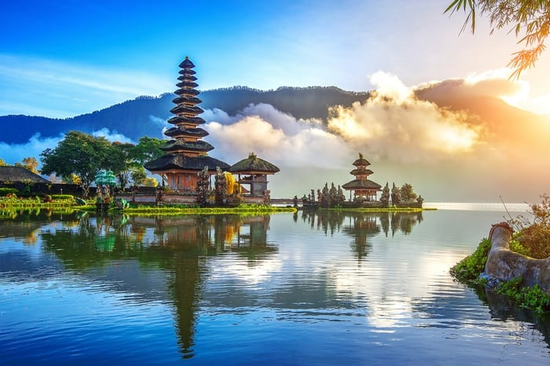

1.Isla Mauricio: Sumérgete en aguas cristalinas, playas de arena blanca y una rica cultura en esta isla paradisíaca en el Océano Índico.
2.Ruta del vino en Italia: Descubre los encantos de la región vinícola de la Toscana, con sus pintorescos viñedos, deliciosa gastronomía y pueblos medievales.
3.Safari en Kenia: Embárcate en una emocionante aventura para avistar la fauna africana en su hábitat natural, desde majestuosos leones hasta elefantes y jirafas.
4.Bali, Indonesia: Con sus playas de arena blanca, aguas cristalinas y una rica cultura, Bali es un destino de ensueño para muchos viajeros. Ofrece una combinación perfecta de aventura, relajación y experiencias culturales, desde practicar surf en las olas de clase mundial hasta explorar templos antiguos y disfrutar de la exquisita gastronomía local.

5.París, Francia: Conocida como la "Ciudad del Amor", París es un destino emblemático que atrae a millones de visitantes cada año. Desde la majestuosa Torre Eiffel hasta los encantadores cafés parisinos y los renombrados museos como el Louvre, esta ciudad ofrece una experiencia inolvidable llena de romance, arte y cultura.